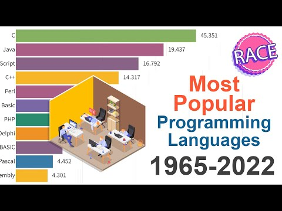
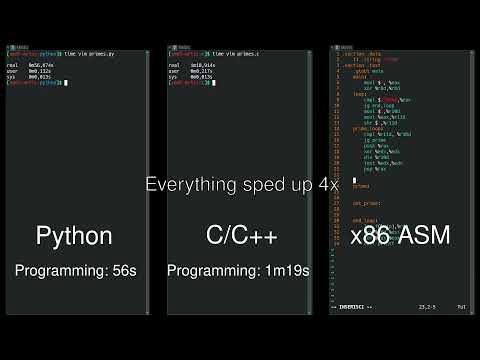
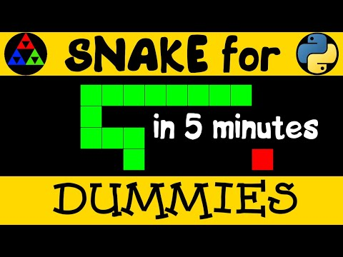
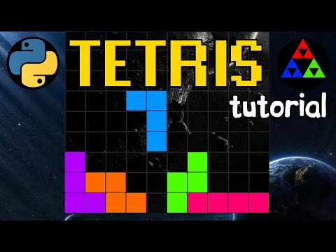

نرمافزارهای لازم
Py
VS
Pd
ویدیوهای جالب درباره پایتون
تماشای ویدیوها اینترنت میخواهد؛ خود صفحه بدون اینترنت هم باز میشود.

پرکاربردترین زبانهای برنامهنویسی از ۱۹۶۵ تا ۲۰۲۲
تماشا در یوتیوب
مقایسه تعداد خطوط، مدت ساخت و مدت اجرای یک کار یکسان با ۳ زبان مختلف
تماشا در یوتیوب
بازی مار در ۶۰ خط و ۵ دقیقه با پایتون
تماشا در یوتیوب
بازی تتریس (خانهسازی) در ۱۸۰ خط و ۹ دقیقه با پایتون
تماشا در یوتیوباین پیوند در یوتیوب باز نشد؛ شاید حذف یا خصوصی شده باشد
تماشا در یوتیوببرای زنگ چهارم
تمرین
زمین بازی پایتون
تمرین پودمان ۱ با تست، راهنمایی و مقایسه خروجی. آنلاین باز کنید؛ در کلاس بدون اینترنت zip را بگیرید و شروع.bat را اجرا کنید.
باز کردن آنلاین دانلود نسخه آفلاینبازی
تکامل اعتماد
نظریه بازی. فایل فشرده را باز کنید و index.html را اجرا کنید. خود بازی اینترنت نمیخواهد.
دانلود نسخه آفلایناین فهرست در طول ترم بیشتر میشود.